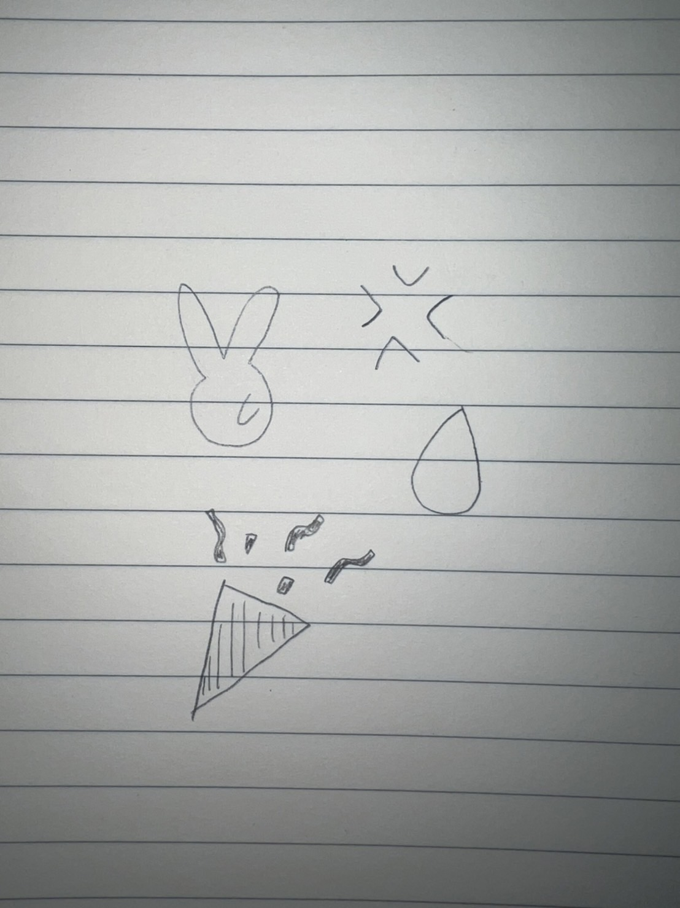

Design for Others
感情を表す〇〇！？
スケッチ

完成作品

協力：道用教授
作品の説明
作品の写真を見ると、道用教授が悲しんでいるのが一目で分かります・・・。これは、感情を分かりやすく伝えることができるフリップです。グループで話し合ったところ、「大学教授の機嫌が悪いのが気になった」という意見が上がりました。そして、これを解決するためには、「面白おかしく機嫌を伝えられたら良いのではないか？」と考えました。このフリップは、持つだけで喜怒哀楽の感情を簡単に表すことができます。また、絵文字を基調としたイラストなのでかわいらしさもあり、機嫌が悪い時も学生に不快感を与えることなく伝えることが可能です。手で持つことが面倒な場合は土台にはめて使うこともできるのですが、その本体は完成次第アップする予定です。以上、全てレーザーカッターで作成しています。